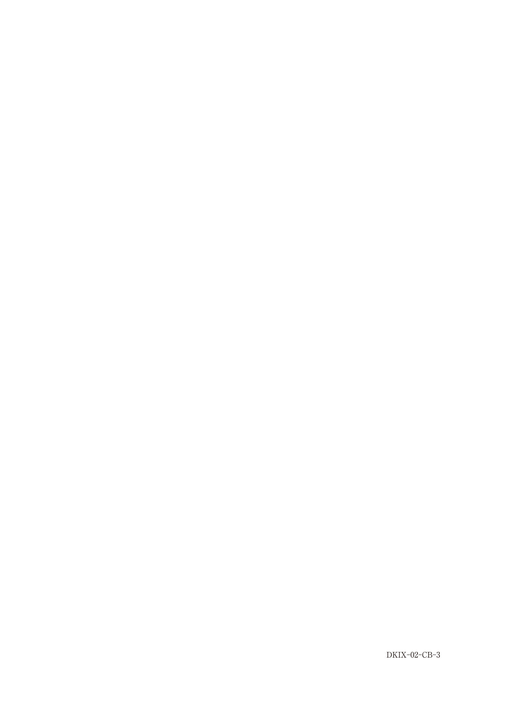
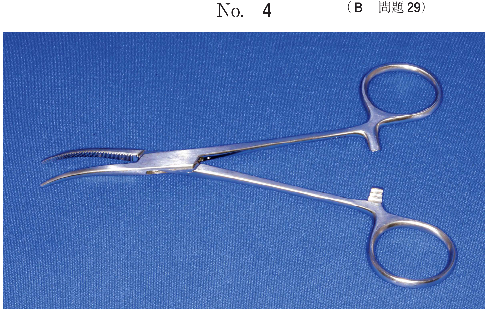
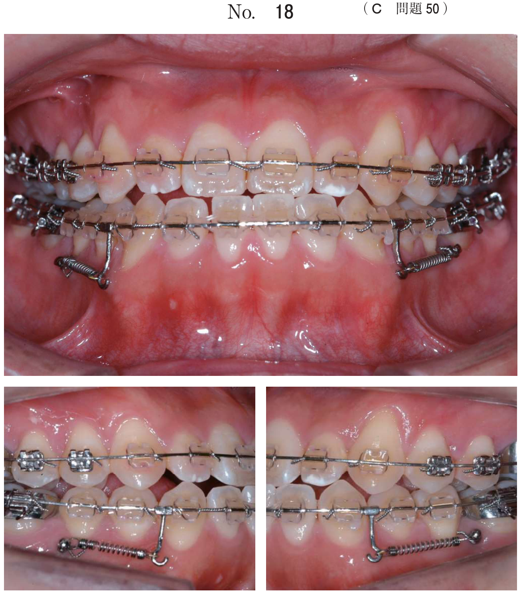
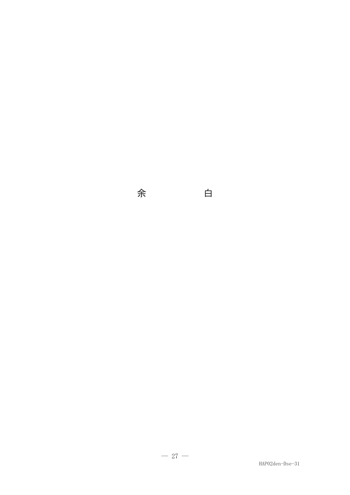
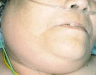
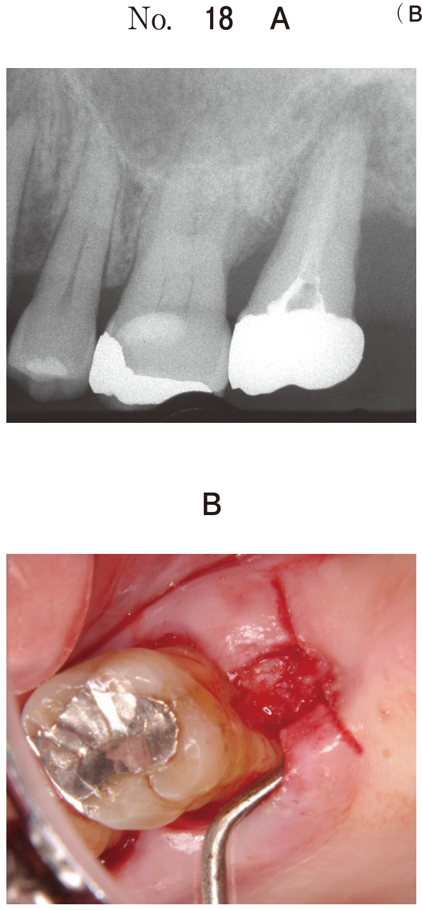
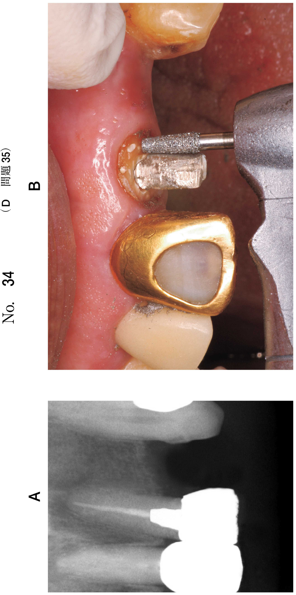

舌下・顎下・頸部の病変
嚢胞性病変の鑑別
頸部の嚢胞は好発部位が鑑別の決め手となる。
| 嚢胞 | 好発部位 | 由来・特徴 |
|---|---|---|
| ラヌーラ（ガマ腫） | 口底部（舌下腺領域） | 舌下腺の唾液の溢出 単純型（舌下型）/膨出型（顎下型） |
| 類表皮嚢胞 | 口底部正中（オトガイ舌筋間） | 迷入上皮の嚢胞化 正中がラヌーラとの鑑別点 |
| 鰓嚢胞（側頸嚢胞） | 側頸部（胸鎖乳突筋前縁） | 第二鰓弓の遺残 顎下腺と胸鎖乳突筋の間 |
| 甲状舌管嚢胞 | 正中、舌骨近傍 | 甲状舌管の遺残上皮 嚥下時に上下動 |
- 口底部・側方 → ラヌーラ
- 口底部・正中 → 類表皮嚢胞
- 側頸部 → 鰓嚢胞
- 正中・舌骨レベル → 甲状舌管嚢胞
嚢胞のMRI所見
- T1強調像：低信号
- T2強調像：著明な高信号（均一）
- 造影：増強効果なし（内容物は造影されない）
脂肪腫
画像所見
| 検査 | 所見 |
|---|---|
| CT | 脂肪と同じ低吸収値（-100HU前後） |
| MRI T1強調像 | 高信号 |
| MRI T2強調像 | 高信号 |
| 脂肪抑制像 | 低信号化（決め手） |
- CT・MRIで脂肪と同じ信号
- 脂肪抑制像で信号が抑制されるのが決め手
- 境界明瞭、無痛性、緩徐増大
炎症性疾患
蜂窩織炎と膿瘍
| 病態 | CT所見 | MRI/造影所見 |
|---|---|---|
| 蜂窩織炎 | 脂肪組織のびまん性濃度上昇 | T2高信号、びまん性増強 |
| 膿瘍 | 周囲より低濃度の領域 | T2著明高信号、リング状増強 |
| ガス壊疽 | ガス像（著明な低吸収） | 急速進行、呼吸困難 |
リンパ節の評価
- 転移リンパ節：中心壊死（リング状増強）、境界不整
- 反応性リンパ節炎：均一な増強、境界明瞭
- 短径10mm以上で転移を疑う
血管腫
- MRI T2強調像：著明な高信号
- 造影CT/MRI：増強効果あり（血流豊富）
- 静脈石（石灰化）を伴うことがある
過去問で確認
口底に発生した病変の写真（別冊No.3A）とMRI T2強調像（別冊No.3B）を別に示す。
原因として考えられるのはどれか。1つ選べ。


b 甲状舌管の遺残
c 迷入上皮の嚢胞化
d リンパ組織の増殖
e リン酸カルシウムの沈着
【解説】口底部の嚢胞性病変。舌下腺領域に発生しており、唾液の溢出によるラヌーラ（ガマ腫）。MRI T2強調像で著明な高信号を呈する。
下顎レベルのCT（別冊No.8A）、MRI T1強調像およびT2強調像（別冊No.8B）を別に示す。
右側頸部の病変で考えられるのはどれか。1つ選べ。


b 脂肪腫
c 線維腫
d 多形腺腫
e 甲状舌管嚢胞
【解説】側頸部（胸鎖乳突筋前縁）の嚢胞性病変。T2高信号、造影効果なし。側頸部の嚢胞は鰓嚢胞（第二鰓弓由来）。甲状舌管嚢胞は正中に発生。
嚥下時の違和感を主訴として来院した患者のCT（別冊No.31A）、MRI T2強調像（別冊No.31B）及び超音波検査の冠状断像（別冊No.31C）を別に示す。
矢印で示す疾患で考えられるのはどれか。2つ選べ。


b ラヌーラ
c 類表皮嚢胞
d 甲状舌管嚢胞
e Blandin-Nuhn嚢胞
【解説】正中部の嚢胞性病変。正中に発生する嚢胞は類表皮嚢胞と甲状舌管嚢胞。鰓嚢胞は側頸部、ラヌーラは口底部側方。
58歳の男性。右側耳介下部の腫脹を主訴として来院した。数年前から自覚しているが変化がないため放置していたという。弾性軟で、圧痛はない。初診時のCT（別冊No.31A）とMRI T1強調像（別冊No.31B）とを別に示す。
病変の主成分として最も考えられるのはどれか。1つ選べ。


b 唾液
c 脂肪
d 血液
e リンパ液
【解説】CTで低吸収、MRI T1強調像で高信号を呈する腫瘤。脂肪と同じ信号特性を示しており、主成分は脂肪。脂肪腫の典型的所見。
72歳の女性。呼吸困難のため救急車で来院した。1か月前から下顎右側のブリッジの動揺を自覚したが放置していた。3日前から右側顎下部が腫脹しはじめ、前日には自発痛や開口障害が強くなり呼吸困難を自覚してきたという。初診時の顔貌写真（別冊No.27A）、エックス線写真（別冊No.27B）及びCT（別冊No.27C）を別に示す。
考えられる疾患はどれか。1つ選べ。


b 出血
c ガス壊疽
d 脂肪肉腫
e リンパ節炎
【解説】歯性感染から急速に進行した顎下部腫脹と呼吸困難。CTで軟組織内にガス像（著明な低吸収）を認める。ガス壊疽は緊急対応が必要。
71歳の男性。顔面部の腫脹を主訴として来院した。右側顎下部に有痛性の腫脹を認める。初診時のエックス線写真（別冊No.48A）、骨表示CT（別冊No.48B）及び造影CT（別冊No.48C）を別に示す。
顎下隙に認められるのはどれか。1つ選べ。


b 脂肪腫
c 類皮嚢胞
d 含歯性嚢胞
e 転移リンパ節
【解説】有痛性腫脹で造影CTでリング状増強を認める。辺縁が増強され中心部が造影されない所見は膿瘍の特徴。